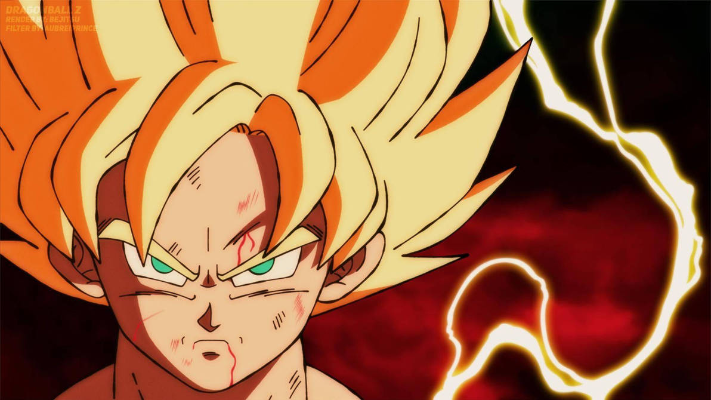
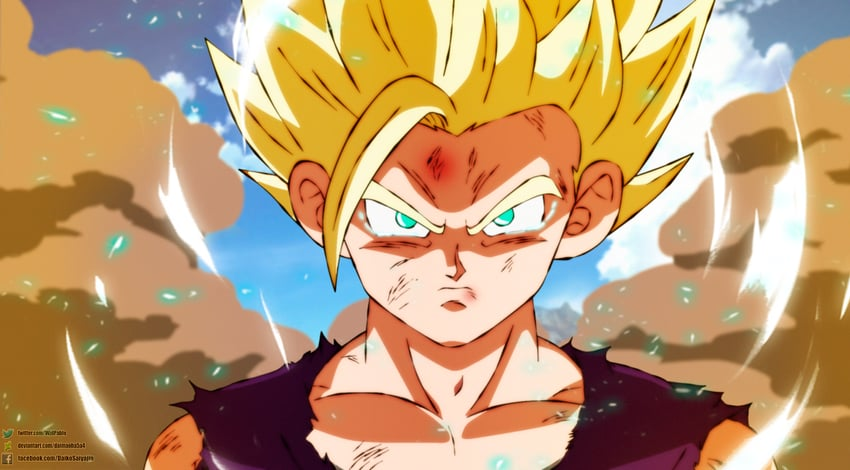
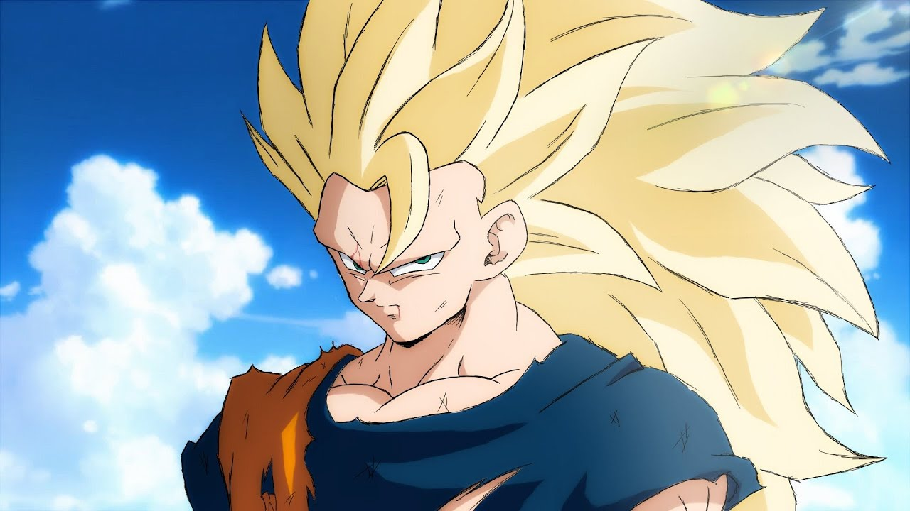

Normal Ascension
The first Super Saiyan form is a legendary transformation in the Dragon Ball series. When a Saiyan achieves this state, their hair turns golden blonde, their eyes become teal or greenish-blue with no pupils, and they gain an immense boost in power, speed, and combat abilities. This transformation is typically triggered by intense emotions like anger or rage and is a pivotal moment in the series, signifying a Saiyan's ascendancy to a new level of strength.
Super Saiyan 2 is an advanced transformation in the Dragon Ball series. In this form, a Saiyan's power and physical appearance undergo significant changes, with their hair becoming even more spiky and electricity-like energy surging around them. The transformation grants a substantial increase in power, speed, and combat abilities compared to the original Super Saiyan form, making it a formidable state for battling powerful foes.
\ Super Saiyan 3 is an advanced transformation in the Dragon Ball series, characterized by its distinct and dramatic changes. In this form, a Saiyan's hair becomes long and flowing, their eyebrows vanish, and they gain massive muscle mass, making them appear more imposing. Super Saiyan 3 grants an incredible boost in power and speed, but it comes with a drawback as it consumes a substantial amount of energy and can only be sustained for a short period, making it a last resort in battles.